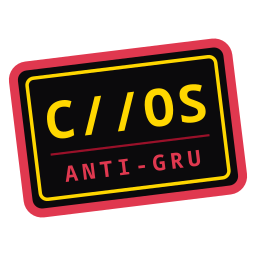

Aktuální vydání · 21. 11. 2026
cibulkaos-2026.11.21-x86_64.iso
⬇ Stáhnout ISO · ~2 GBKontrolní součet SHA256 · Všechna vydání
- Pro počítače
- 64bitové PC (běžné i starší)
- Prostředí
- KDE Plasma 6
- Potřebujete
- flashku 4 GB, 2 GB RAM, 10 GB na disku

CibulkaOSArch Linux · KDE Plasma 6 · vydání 2026.11
Distribuce Arch Linuxu pro svobodné Čechy
Jediný operační systém, jehož náhodná čísla pocházejí přímo z vyšších sfér, jehož zavaděč nemá nic společného s ruskou vojenskou rozvědkou a který každého nového uživatele nejdřív prolustruje.

§ 01
Všechno, co běžné distribuce zanedbávají. A všechno to v CibulkaOS opravdu funguje.
Spis 01Zavaděč
Zavaděč systému se dřív jmenoval GRUB. To bylo nebezpečně blízko ruské vojenské rozvědce GRU, takže dostal nové jméno. Při každém startu na vás dohlédne Petr Cibulka s kyvadlem.
„Anti-GRUB · prověřeno.“
Spis 02Náhoda
Náhodná čísla nepočítá procesor, ale siderické kyvadlo v přímém kontaktu s vyššími sférami. Hesla a klíče tak vznikají tam, kam žádný fízl nedosáhne.
„Kontakt s vyššími sférami navázán.“
Spis 03Oprávnění
Chcete v systému udělat něco jako správce? Zeptejte se kyvadla. V polovině případů vás pustí. V té druhé odhalí, že jste infiltrovaný agent StB.
„Aura vašeho terminálu vykazuje stopy cyrilice.“
Spis 04Uživatelé
Každý nový uživatel projde lustrací proti 100 666 skutečným záznamům z archivu StB. Při shodě systém vypíše krycí jméno i číslo svazku a účet nekompromisně smaže. Správce se jmenuje Cibulka, žádný root.
„Vedený jako agent. Účet zamítnut.“
Spis 05Síť
Systém sám zavře dveře ruským a čínským serverům. A když se něco pokazí, žádnou chybu neuvidíte, jen hlášení o další úspěšné akci.
„Úspěšná sabotáž marxisticko-leninských struktur.“
§ 02
Stáhnout, nahrát na flashku, nainstalovat. Za pár minut máte svobodný systém.
Aktuální vydání · 21. 11. 2026
Kontrolní součet SHA256 · Všechna vydání
Stačí program balenaEtcher nebo Ventoy. Vyberete soubor, vyberete flashku a kliknete.
Při zapínání počítače zvolte spuštění z USB. Přivítá vás Anti-GRUB s portrétem Petra Cibulky.
Ikona čeká na ploše. Projděte instalátorem, restartujte a jste svobodní.